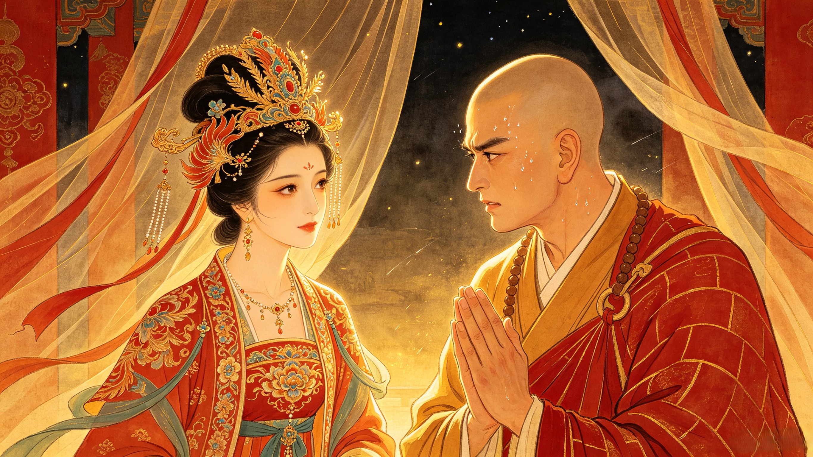
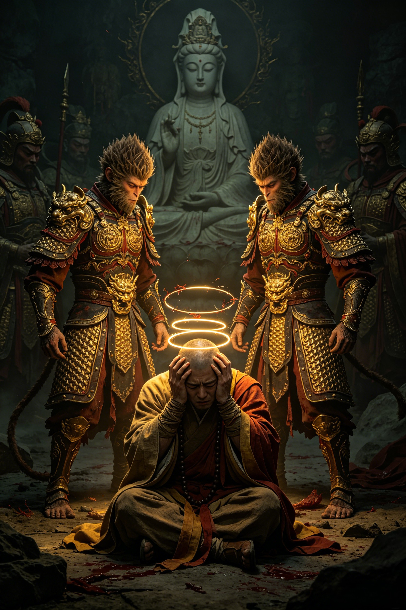

The Unarmed Warrior
He carried no weapon. He could not transform. He could not summon a single cloud. Yet the pilgrim faced demons that his immortal disciples could not see — and did not fall.
A demon with no physical form — only the ability to inhabit the bodies of the dead. It approached the pilgrims three times: first as a beautiful young woman offering food, then as her grieving mother searching for her daughter, finally as an old man seeking his lost family. Wukong saw through each disguise and struck them down. But Sanzang saw only his disciple murdering innocents. Blinded by compassion, enraged by what he believed was senseless violence, he used the Headband Sutra — the tightening golden fillet that sent Wukong writhing in agony — and banished his greatest protector from the pilgrimage. It was the worst mistake of the journey. Without Wukong, Sanzang walked directly into the demon's trap.
A nation ruled entirely by women. No man had ever entered — and no man had ever left. When the pilgrims arrived, the Queen saw Sanzang and immediately decided he would be her husband. Not a demon. Not a threat. An offer of everything a mortal could want: a throne, a queen, a kingdom, an end to the endless walking. The Queen's offer was genuine — she loved him. And Sanzang, for perhaps the only time on the entire pilgrimage, hesitated. The vow wavered. It was Zhu Bajie — the greediest, laziest, most unreliable of his disciples — who snapped him back, reminding him what waited at the end of the road. They escaped the kingdom, but Sanzang left a piece of his mortal heart behind.

A second Sun Wukong appeared — identical in every way. Same face. Same voice. Same memories. Same Ruyi Jingu Bang. The entire pilgrimage fractured. Which was the real Monkey King? Which was the imposter? Every test failed: the Headband Sutra tightened on both, the Mirror of Truth showed two identical reflections, even Guanyin could not tell them apart. It fell to Sanzang — who could not fight, who could not see through transformation, who had no divine power whatsoever — to make the call. He trusted nothing but the journey itself. If a being had walked every step beside him, shared every campfire, endured every storm — that was his disciple. The false Wukong was revealed not by magic, but by Sanzang's intimate knowledge of the soul beside him. The Buddha himself confirmed it: the pilgrim's faith was the one instrument heaven could not replicate.

"Sanzang never threw a single punch across 108,000 li of demon-haunted wilderness. His weapon was the one thing his three immortal disciples could not summon: the refusal to stop walking."
Dive Deeper